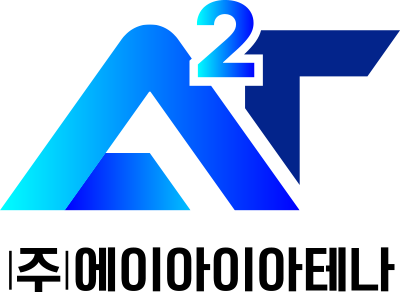
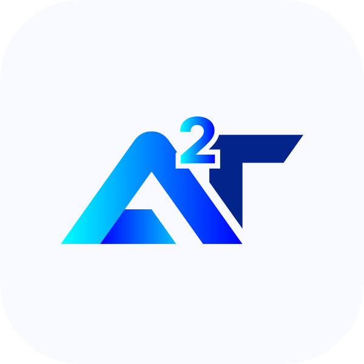

My ATS
AI 서류 심사관
지원 전, 먼저 읽는 것
내 서류,
합격에 가까운가?
이력서와 채용공고를 함께 읽는
AI 서류 심사관, My ATS
01 / 서류 심사
채용공고의 언어로
내 이력서를 다시 보다
서류 심사 리포트
분석 완료
종합 점수
82
/100
직무 적합도
87
언어 품질
78
유사도
81
+
공고 핵심 키워드 6개가 반영됐어요
02 / AI 면접 연습
회사마다
다른 질문
이 필요하니까
01
지원 직무에서 가장 먼저 해결하고 싶은 문제는?
↗
02
우리 조직의 방식과 맞닿은 경험은?
↗
03
입사 후 90일, 무엇을 바꾸고 싶나요?
↗
03 / 커리어 분석
지금의 경험이
어디로 이어질지
↗ 커리어 인사이트
추천 NCS 수준
Lv. 5
서비스 기획 · 데이터 기반
연봉 가이드
4,200
만원+
경력·지역 기준 참고
추천 직무 3개
강점 키워드 8개
표현·날짜 이슈
04 / 음성 자기소개서
말하듯 자연스럽게,
나답게 쓰는
자소서
●
음성 가이드 녹음
00:42 / 10:00
•
음성을 전사하고 내 이력서에 반영합니다
생각을 녹음하면, 문장이 됩니다

My ATS
AI 서류 심사관
더 정확하게 지원하고,
더 나답게 준비하세요.
resume · interview · career · voice